欧游札记之火舞西班牙（Day8格拉纳达—格拉纳达大教堂及王室礼拜堂—阿尔拜辛老城区）

Day8 格拉纳达—格拉纳达大教堂及王室礼拜堂—阿尔拜辛老城区
作为科尔多瓦被基督徒收复后伊斯兰世界在西班牙的最后堡垒，格拉纳达继续庇护着阿拉伯文明最后的火种直至1492年潸然谢幕，但就是在陷落前短短的两个半世纪时间里，摩尔人依然不离不弃地修建了被誉为“终结宴会”的伊斯兰建筑瑰宝——阿尔罕布拉宫。值得庆幸的是，即便是西班牙收复失地运动结束、将伊斯兰教徒驱逐出格拉纳达城区之后，基督徒们仍然保留了包括清真寺在内的大部分伊斯兰建筑，只是做了一些改造和修缮，尽可能地维持了伊斯兰文明的袅袅余韵，令这座安达卢西亚城市才具有了独一无二的灵魂。
颇带着些朝圣的心情搭乘火车三个多小时从塞维利亚来到格拉纳达，下车伊始总体感觉城市不大，主要是以阿尔拜辛老城、阿尔拜辛宫和大教堂为中心的商业区所组成。三者互为犄角，以山顶的阿尔汉布拉宫为核心，阿尔拜辛区和大教堂区分别位于山腰和山脚形成了左右拱卫。我们住在大教堂区的民宿，抬头远眺便可看见阿尔罕布拉宫的宣礼塔矗立于山顶，夜晚繁星般的灯光顺着阿尔拜辛区一路向上直抵宫殿，俯瞰照耀着整个夜幕中的格拉纳达。
出于近水楼台的原因，我们先去造访了格拉纳达大教堂，它与大多数格拉纳达建筑一样与阿拉伯艺术有着割舍不断的关系，首先是建筑在一座清真寺的遗址之上，虽然最初采用了哥特式风格，但中期深受穆德哈尔银匠风格影响，最后综合了文艺复兴风格，可谓多元艺术风格的先后交错融合的典范。比如入口正面是较为典型的文艺复兴风格的三圆拱门式结构，大门上方及门柱两侧各雕刻点缀着花状装饰和圣人雕像画。
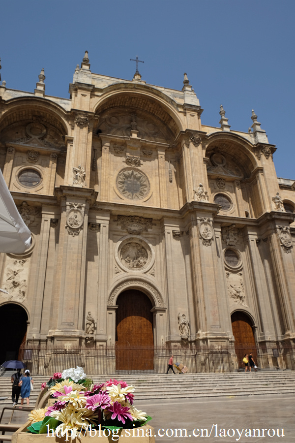
而走入教堂后，感觉穹顶的挑高非常符合哥特式特点，但两侧立柱和穹顶的装饰又是文艺复兴的范，在黄金祭坛上方穆德哈尔式的圆顶加持下，穆斯林和基督教的璀璨文化于此时此地毫无违和地糅合起来，交相呼应、熠熠生辉。
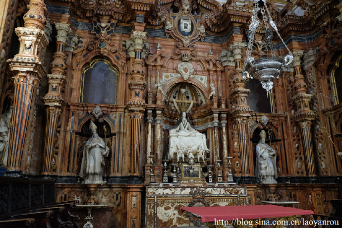
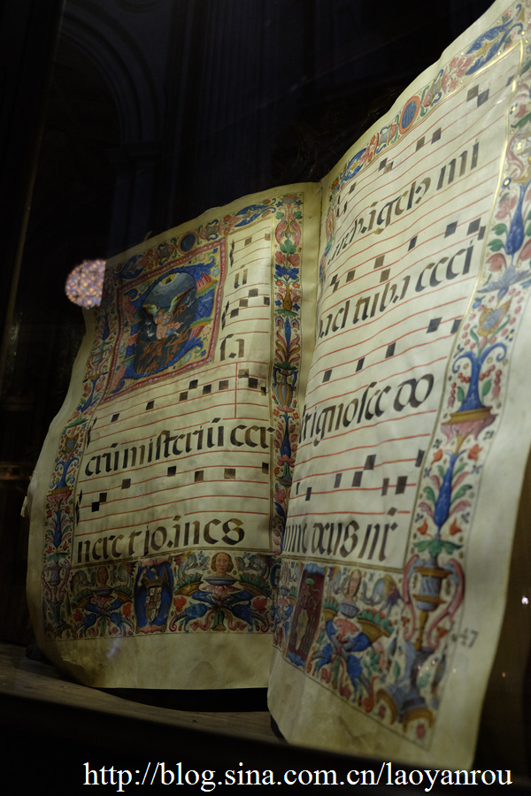
大教堂后的王室礼拜堂安葬了西班牙历史上最著名的“双王”——伊莎贝尔女王和他的丈夫，虽然在世时未能亲眼看见礼拜堂的落成，但死后西班牙人还是把他们作为征服者合葬在格拉纳达，以纪念他们从异族手中收复失地、统一国家的卓越贡献，但我个人窃以为双王的更大贡献在于资助哥伦布找到了新大陆，开启大航海时代影响了世界的深远格局。
稍事休息我们继续向丘陵高处的阿尔拜辛区探索，这个地区修建于阿尔汉布拉宫的西侧丘陵高地上，居高临下、易守难攻，是摩尔人防御外敌入侵而天然形成的防御性城市。据说当年白色的墙壁和石板路曾染满了摩尔人的鲜血，可见战事之惨烈、牺牲之巨大，但终究也无法挽回摩尔人被西班牙人驱逐到北非的命运。顺着蜿蜒崎岖的鹅卵石路向上攀登，道路两侧的房屋开始依稀分辨出一些伊斯兰风格来，墙壁无论是石墙、砖墙还是水泥墙基本一律刷白，整齐划一，在郁郁葱葱、绿意盎然的爬山虎、绿植覆盖或鲜花点缀之下显得格外干净清爽。
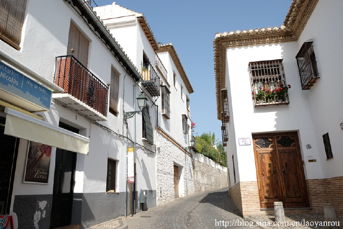
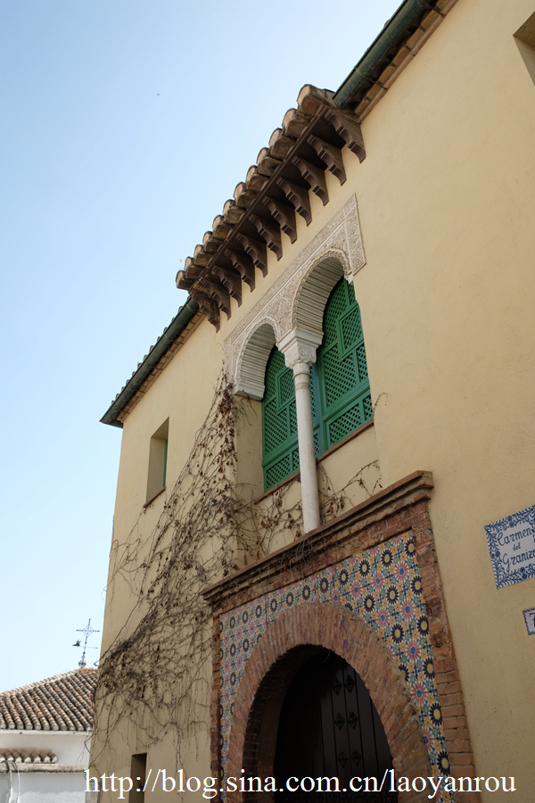
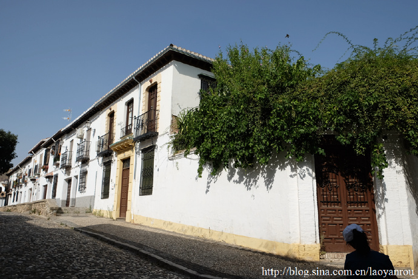
门窗也逐渐从长方形变成了阿拉伯风格的拱形，但无论哪种形状其四周都装饰着一些马赛克或伊斯兰样式的花纹，有些还在墙壁上挂着一些陶盘、陶画以彰显其个性。路过一些大房子时，好奇地透过栅栏偷窥其庭院，发现大多都是整洁精致的摩尔风格的小花园，围绕着鹅卵石纹样的小径，陶盘、陶盆掩映在绿树鲜花之中，别有一番异域风情。
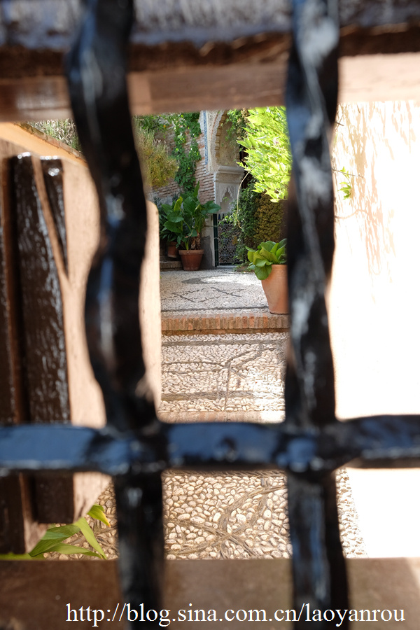
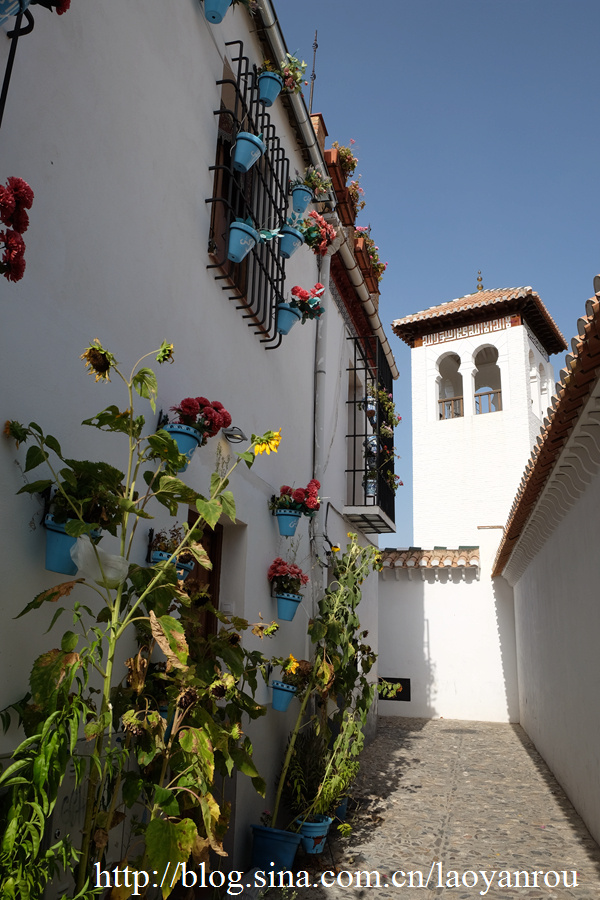
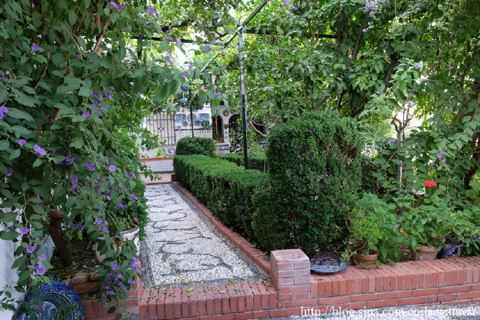
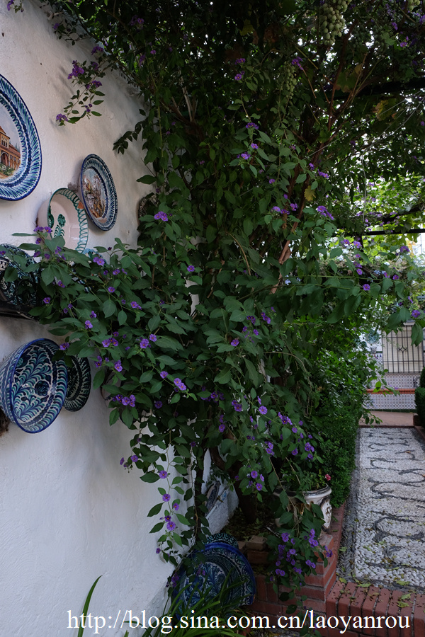
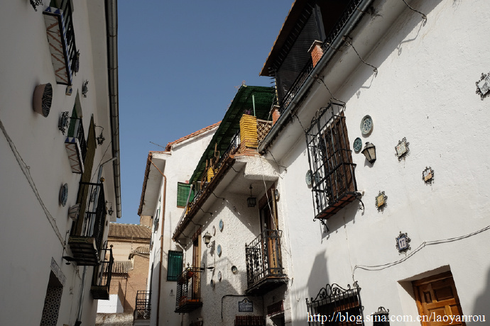
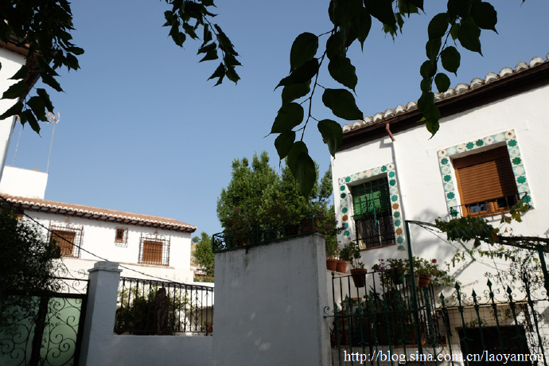
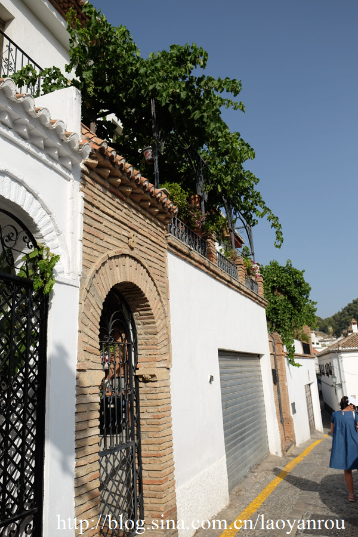
从表面上看，摩尔人似乎还生活在这里，整个阿尔拜辛区丝毫没有被基督文化染指的迹象。但实际上从山下一路走来，除了零星的西方游客不说，我们所目视到的伊斯兰人或者说面貌相似的人寥寥无几，偶尔出现在路边摩尔工艺品小店里的估计也是北非跑来这边做点游客生意讨生活的，摩尔人或伊斯兰人已经彻底被西班牙人赶跑了，留下了阿尔拜辛区来证明他们曾经来过、住过、奋斗过。格拉纳达的默罕默德十一世曾卑躬屈膝的向西班牙双王祈求放摩尔人一码，作为交换可以帮其攻打其他伊斯兰人，甚至连宗教信仰都能放弃。然而西班牙人还是毅然决然地要赶尽杀绝，不将摩尔人赶出西班牙誓不罢休。尽管非常同情摩尔人，但不得不说西班牙人还是有先见之明的，看现今社会欧洲国家逐渐被伊斯兰化，激进伊斯兰的原教主义诱发的各种恐怖主义和社会问题此起彼伏，相比其他欧洲国家为伊斯兰问题焦头烂额，西班牙可以说是独善其身，隔山观火了。究其源头，格拉纳达的收复功不可没。
作为防御型的城市，没几个瞭望平台说不过去，我们登上了其中最出名的圣尼古拉斯观景平台，从这里极目东眺，雄伟的阿尔罕布拉宫沐浴在夕阳里，褐红色、黄色的城堡和宫殿群尽收眼底，浓郁得化不开的松树和灌木簇拥四周，一大片宫殿错落有致坐落在山顶，仿佛空中楼阁似的漂浮在格拉纳达上空，威严地、静静地俯瞰这块土地和上面的臣民。 尽管宫殿规模形制宏大，但说实话相比其他欧洲宫殿来说其貌不扬，红砖和石头砌成的外墙和灰瓦屋顶构建的建筑方方正正、中规中矩，实在看不出太多的精雕细琢。估计只有真正进入宫殿内部，近距离地接触才能体验到阿宫的精妙之处吧。
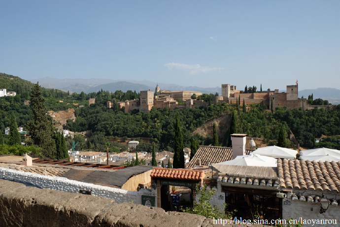
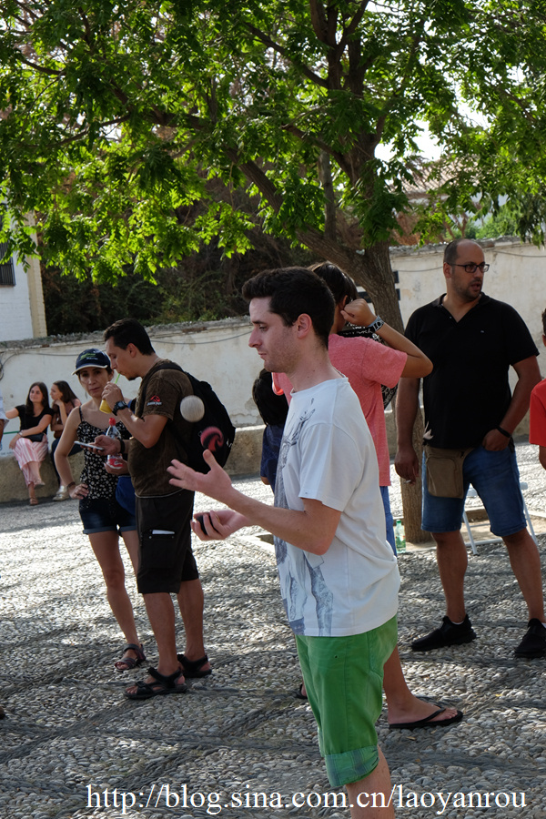
夕阳西下，我们也随之下山，行至山脚河边一处基督教堂时，偶遇一对西班牙新人结婚，新郎俊朗帅气，新娘如花似玉，真乃天赐良缘也！教堂悠扬的婚礼乐声和钟声伴随着我们一路，流水潺潺，心情格外舒畅。
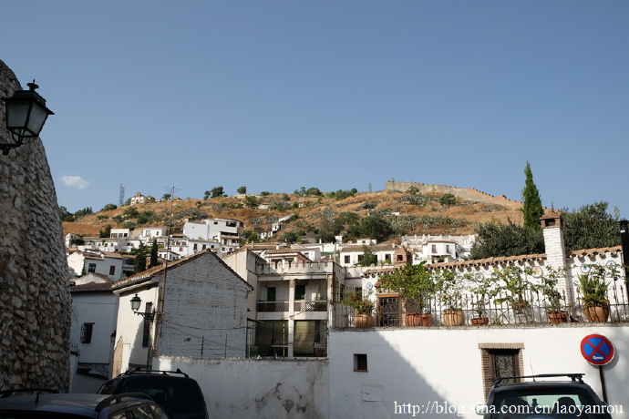
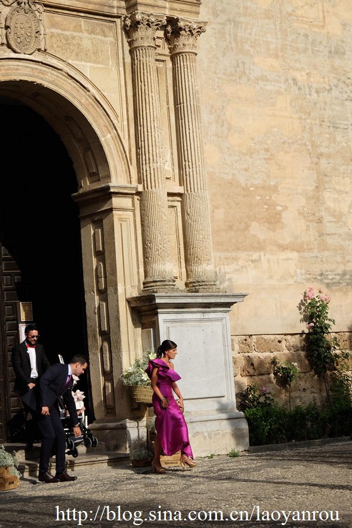
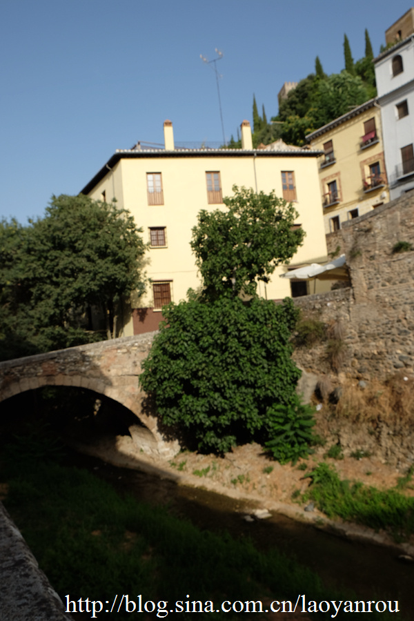
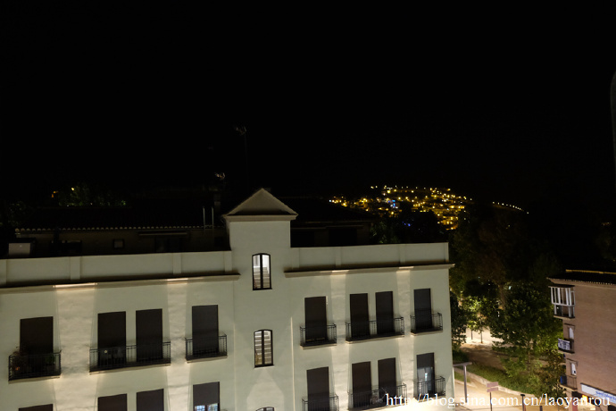